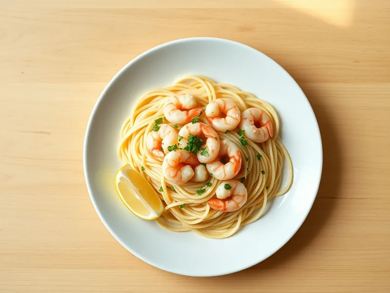

Фото: Иллюстрация ИИ, Cloudflare Workers AI
Паста с креветками в сливочно-чесночном соусе
Спагетти с обжаренными креветками в сливках с чесноком и лимоном
20 мин2 порц.751 ккал на порциюБ 42 · Ж 31 · У 74Итальянская кухня
Продукты на 2 порц.
- Макароны200 г
- Креветки250 г
- Сливки 20%150 мл
- Чеснок2 зуб.
- Сливочное масло20 г
- Пармезан30 г
- Лимон по желанию1 долька
- Петрушка по желаниюпо вкусу
- Соль2 ч. л.
- Вода2000 мл
Как готовить
- Вскипятите воду на сильном огне, посолите и сварите спагетти по инструкции на упаковке, обычно 8-9 минут.
- Очищенные креветки разморозьте под холодной водой 3-4 минуты и обсушите полотенцем.
- Растопите масло на сковороде на среднем огне, обжарьте мелко нарезанный чеснок 30 секунд, затем креветки по 1-2 минуты с каждой стороны, пока не станут розовыми и не закрутятся.
- Влейте сливки, доведите до лёгкого кипения и томите 2-3 минуты, вмешайте тёртый пармезан.
- Откиньте спагетти, переложите в сковороду и перемешайте 1 минуту. Сбрызните лимонным соком и посыпьте петрушкой.
Совет. Креветки жарят совсем недолго: передержите на минуту, и они станут резиновыми. Если креветки уже варёно-мороженые, просто прогрейте их в соусе 1 минуту.